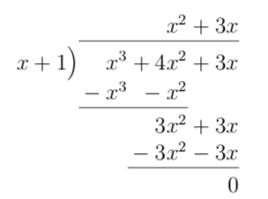
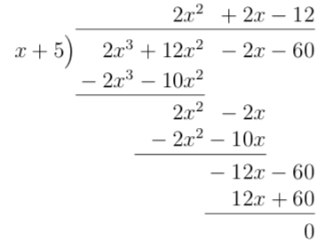
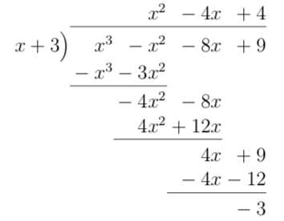
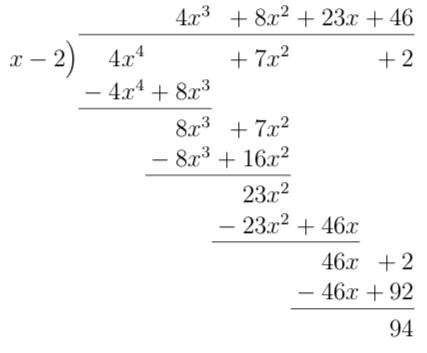
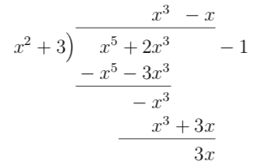
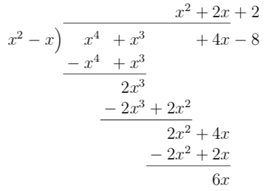
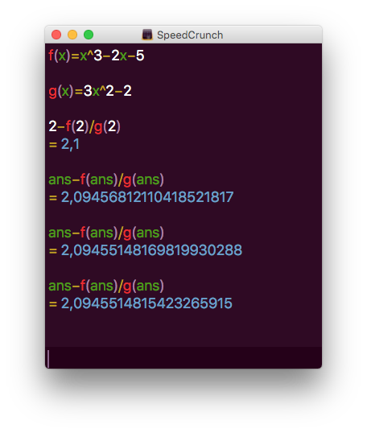
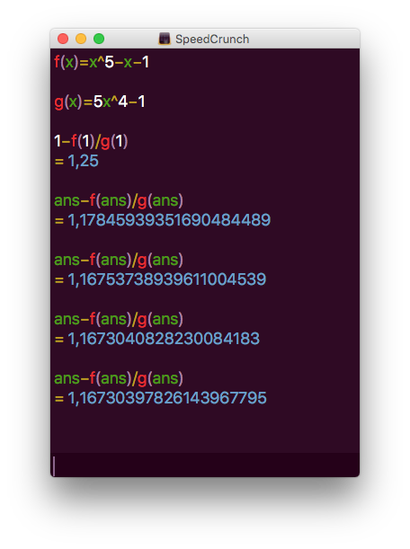
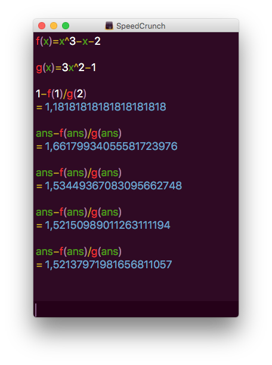

8. Repetition
Här hittar du sådant som fungear som repetionsuppgifter.
Uppgifter
- Bestäm följande kvoter.
- \( \dfrac{x^3+4x^2+3x}{x+1} \)
Vi får

Alltså \( \dfrac{x^3+4x^2+3x}{x+1} = x^2+3x \).
- \( \dfrac{2x^3+12x^2-2x-60}{x+5} \)
Vi får

Alltså \( {2x^3+12x^2-2x-60}{x+5} = 2x^2+2x-12 \).
- \( \dfrac{x^3-x^2-8x+9}{x+3} \)
Vi får

Alltså \( \dfrac{x^3-x^2-8x+9}{x+3} = x^2 -4x +4 -\dfrac{3}{x+3} \).
- \( \dfrac{4x^4+7x^2+2}{x-2} \)
Vi får

Alltså \( \dfrac{4x^4+7x^2+2}{x-2} = 4x^3 + 8x^2 +23x +46 +\dfrac{94}{x-2} \).
- \( \dfrac{x^5+2x^3-1}{x^2+3} \)
Vi får

Alltså \( \dfrac{x^5+2x^3-1}{x^2+3} = x^3 -x + \dfrac{3x-1}{x^2+3} \).
- \( \dfrac{x^4+x^3+4x-8}{x^2-x} \)
Vi får

Alltså \( \dfrac{x^4+x^3+4x-8}{x^2-x} = x^2+2x + \dfrac{6x-4}{x^2-x} \).
- \( \dfrac{x^3+4x^2+3x}{x+1} \)
- [SE H11] Isaac Newton lade år 1669 fram den metod för beräkning av funktioners nollställen som uppkallas efter honom. För att demonstrera metodens användbarhet använde han bland annat polynomet \( f(x)= x^3 -2x -5 \).
- Beräkna \( f'(x) \).
\( f'(x) = 3x^2-2 \).
- Visa att den ekvation \( f(x)=0 \) som Newton undersökte har en lösning i intervallet \( [2,3] \).
Eftersom \( f'(x) = 0 \) då \( \pm\dfrac{\sqrt{6}}{3} \approx \pm 0,82 \) är \( f \) strängt monotom i intervallet.
Vi får att \( f(2) = -1 \) och \( f(3) = 16 \). Alltså har \( f \) exakt ett nollställe.
- Approximera lösningen genom att utföra fyra iterationer med Newtons metod. Använd begynnelsevärdet \( x_0=2 \). Ge svaret med fyra decimalers noggrannhet.
Vi får

Alltså 2,0946.
- Beräkna \( f'(x) \).
- [SE H14] Vi undersöker ekvationen \( x^5 - x = 1 \).
- Visa att ekvationen har exakt en lösning i intervallet \( 1 \leq x \leq 2 \).
\( f'(x) = 5x^4-1 \). Derivatans nollställe är i \( x = \pm \dfrac{1}{\sqrt[4]{5}} \approx \pm 0,67 \). Derivatans nollställe är utanför intervallet. I intervallet \( 1 \leq x \leq 2 \) är \( f'(1) = 4 \), alltså är \( f \) växande.
Eftersom \( f(1) = -1 \) och \( f(2)= 29 \). Betyder det att \( f \) skär \( x \)-axlen en gång.
Alltså har ekvationen en lösing i intervallet \( 1 \leq x \leq 2 \).
- Bestäm genom att använda Newtons metod och startvärdet \( x_0 = 1 \) närmevärdet \( x_4 \) till lösningen i deluppgift a. Ange svaret med tre decimalers noggrannhet.
Vi får

Alltså 1,167.
- Visa att ekvationen har exakt en lösning i intervallet \( 1 \leq x \leq 2 \).
- [SE V09] Bestäm med hjälp av Newtons metod en rot till ekvationen \( x^3 = x+2 \) med två decimalers noggrannhet. Visa att ekvationen har exakt en rot i intervallet \( [1,\infty[ \).
Ekvationen \( x^3 = x + 2 \) är samma som \( f(x) = x^3 - x -2 = 0 \).
Vi visar att \( f \) har ett nollställe och bestämmer nollstället.
\( f'(x) = 3x^2-1 \). Derivatans nollställe är \( x = \pm \dfrac{\sqrt{3}}{3} \approx \pm 0,58 \). Eftersom vi jobbar i intervallet \( [1,\infty[ \) gäller att \( f'(1) = 2 \) och \( f \) är strängt växande.
Då \( f(1) = -2 \) och \( f(2) = 4 \) betyder det att vi har ett nollställe i \( 1 \leq x \leq 2 \).
Vi får

Alltså 1,52.
- För att kunna programmera med Python på egen dator behöver du ha Python installerat på den. Följ instruktionerna på tie.koodariksi.fi för att installera Python.
Lös sedan följande uppgift.
Skapa ett program som löser följande uppgift:
Vi söker ögontal för tre tärningar.
Om du adderar ögontalet är svaret 6.
Inga ögontal intill varandra har samma ögontal.
Om du multiplicerar ögonen är svaret 4.
Utmana dig själv så att värdet för summan och multiplikationen väljs slumpmässigt och programmet klarar av att hitta ögontalen.
Lösningen
- Skriv ett program som utnyttjar Newtons metod som kan bestämma närmevärden med 6 decimalers noggrannhet för kvadratrötter.
Lösningen